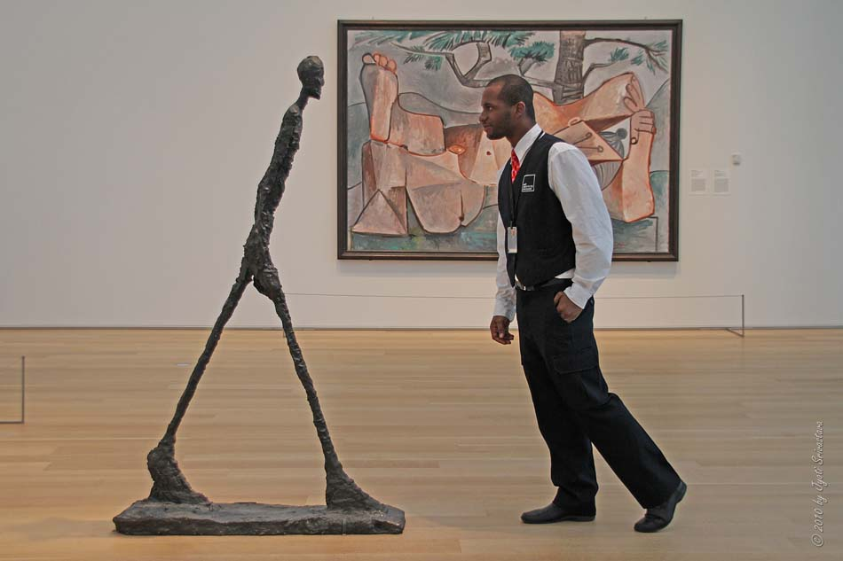

A View from the Gallery
In building a website for myself, something I always wanted was a webpage that resembled an art gallery. A digital white wall with rotating art framed in overly ornate frames. This felt like an easy way to introduce someone to the things I valued or found interesting, and isn't that the goal of a personal website!
But as I thought more about this concept, I realized galleries offer something deeper than just aesthetic display. The best thing about galleries is that they force you to take on someone else's perspective. The best art necessitates a different worldview or attention towards what was ordinarily mundane or banal. It could be fire hoses wrapped to become a door, or newspaper cut into leaves of a tree with dense branches. Regardless of form, art essentially communicates someone's aesthetic preferences. There's no necessary tether to reality, which is why it can feel so freeing to walk through a gallery. You get to briefly live in someone else's world.
This transmutation of experience shows us bluntly that people view the world very differently! Our standard daily operating system might generally accept things around us for what they are. This routine way of seeing can carry us through days and years consuming the world without producing. Inhabiting someone else's perspective through art is a necessary break from our priors. Galleries in that way offer great lessons in how to become perceptive, they principally show us how someone exerted their ideas on the physical world.
Perhaps this is what I really want from this website: not just to display what I find interesting, but to make a digital space where visitors can temporarily inhabit my way of seeing the world.
